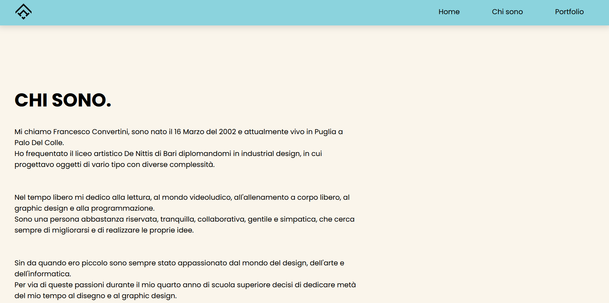
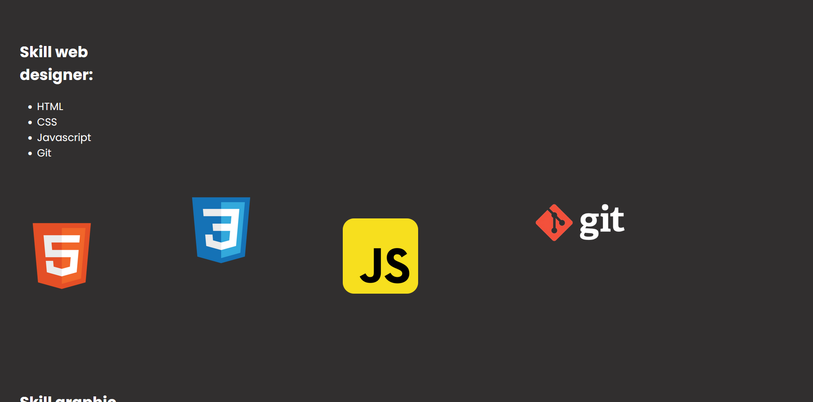
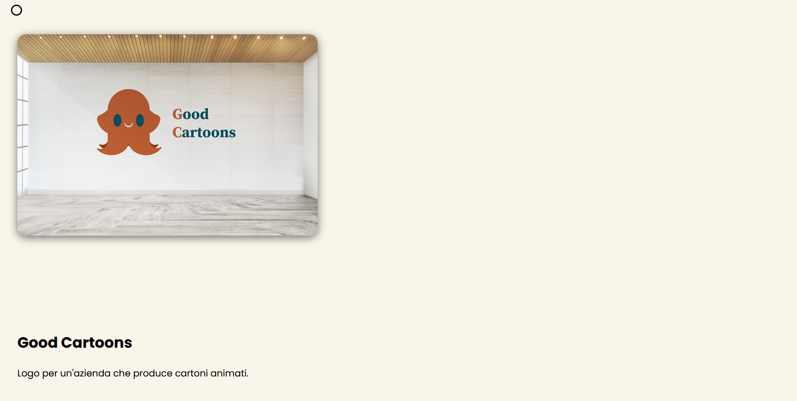
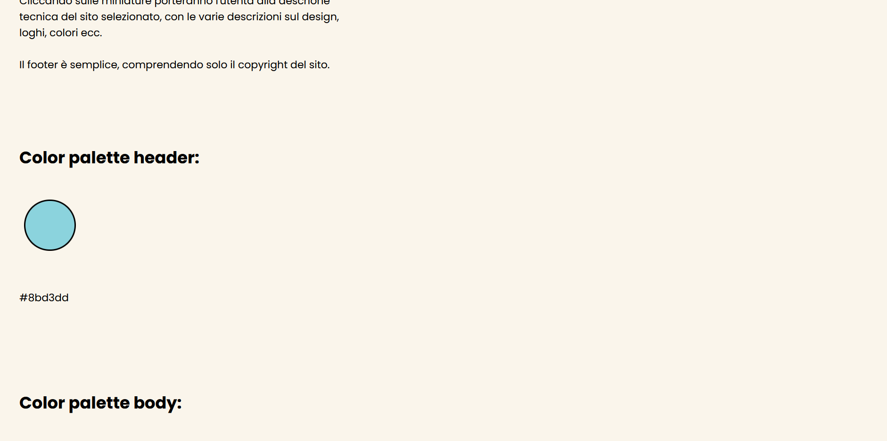

FrancescoConvertini Portfolio
Sito personale per far conoscere e mostare le proprie abilità di graphic design e programazzione.

Linguaggi di programazzione usati:
Softwer esterni usati:
Creazione del logo
Il logo personale è costituito da due F (iniziale del mio nome) inclinate, specchiate, divise in tre parti e unite tra di loro.
Il risultato ottenuto è un logo minimal e simmetrico.

Color palette logo:
#000000
Il suo colore nero va ha ricchiamare eleganza e serietà.
Design del sito:
Per la creazione del sito è stato optato un design minimal per un esperienza utente pulita e comprensibile.
L'header comprende il menu alla destra composto da tre opzioni principali (home, chi sono e portfolio)
e il logo posizionato alla sinistra.
La home page è strutturata con una breve descrizione del sito, con una foto identificativa
e con un bottone animato all'hover per il contatto.
La sezione "chi sono" è strutturata con una breve biografia, con lo sfondo che cambia di colore
dopo che si raggiunge un certo numero di pixel
e con la descrizione delle varie skill con le rispettive immagini animate all'hover.
La sezione "Portfolio" è strutturata con il posizionamento in colonna delle miniature
animate all'hover dei siti con una breve descrizione di essi.
Cliccando sulle miniature porteranno l'utenta alla descrione tecnica del sito selezionato,
con le varie descrizioni sul design, loghi, colori ecc.
Il footer è semplice, comprendendo solo il copyright del sito.




Color palette header:
#8bd3dd
Color palette body:
#faf5eb
Color palette footer:
#443e3e
Tipografia:
Il font utilizzato per questo sito è il Poppins.
Versione mobile:
Per la versione mobile è stato fatto un lavoro accurato, per rendere il tutto più chiaro, leggibile
e coerente possibile alle varie piattaformi mobile.